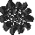

Об игре
Игра DwDung – это многопользовательская игра про подземелье, населённое дварфами и гоблинами.
Дварфы роют туннели, воюют с гоблинами, добывают полезные ископаемые, мастерят и возводят постройки.
Этот непрерывно меняющийся мир является общим для всех игроков. В игре можно общаться, торговаться, сражаться, рыть стены,
добывать полезные ископаемые, выплавлять металлы, изготовлять предметы и строить.
Есть внутриигровые языки, например, орки понимают орчий язык, а сообщения игроков других рас превращаются в нечитаемый текст.
Сражения совершенствуют навыки владения оружием, а по достижению определенного уровня навыка открываются новые приёмы.
Торговать можно как с другими игроками, так и с дварфами-NPC.
Жанр игры можно определить как MMO Roguelike, подробнее…
Согласно Берлинской интерпретации, жанр Roguelike обязан включать:
Также для Roguelike обычно характерны: управление одним персонажем; человекоподобное поведение монстров (могут поднимать предметы и т.п.); псевдографика.
Не все эти принципы можно реализовать в условиях MMO (massive multiplayer online):
поскольку игровой мир является общим для всех, процедурно-генерируемый мир заменен процедурно-изменяемым;
игра происходит в режиме реального времени и ослаблен принцип перманентной смерти.
Практически все остальные концепции Roguelike в этой игре соблюдаются.
Регистрация / вход
Для начала игры нажмите START A NEW GAME, при желании можно выбрать расу и ввести свой пароль (пароль по умолчанию: ff). После входа в систему вам будет присвоен числовой идентификатор. Если вы хотите продолжить игру тем же персонажем, на стартовой странице введите числовой идентификатор и пароль и нажмите Login.
Управление
AWD или ←↑→ для поворота налево, движения вперёд и поворота направо. Персонаж перемещатся только вперёд, в направлении взгляда.
Поднять предмет: T или ↓.
Предметы ( , ,
, ,  и т.д.) поднимаются,
если находятся под персонажем. Инвентарь отображается внизу экрана.
Двойной клик на предмет в инвентаре экипирует его (если возможно) или использует (если возможно), см. раздел Экипировка.
Чтобы выбросить предмет из инвентаря перетащите его на карту. За одно игровое действие игрок может выкинуть до 7 одинаковых предметов.
и т.д.) поднимаются,
если находятся под персонажем. Инвентарь отображается внизу экрана.
Двойной клик на предмет в инвентаре экипирует его (если возможно) или использует (если возможно), см. раздел Экипировка.
Чтобы выбросить предмет из инвентаря перетащите его на карту. За одно игровое действие игрок может выкинуть до 7 одинаковых предметов.
Если предметов под персонажем нет, персонаж будет брать предметы из объектов в двух клеточках перед собой, если это возможно, см. Выплавка металла.
M - Сборка предметов (крафт). Нажмите, чтобы появилось окно сборки предметов. Двойной клик по предмету заставит персонажа делать его, подробнее см. Крафт.
B – строительство. Постройка начинается в первой клеточке в направлении взгляда. Сначала персонаж выкладывает необходимые предметы на пол, а затем строит. Подробнее см. Строительство.
Ниже карты расположено поле ввода и кнопка "say", нажав которую вы произнесете фразу введённую в поле ввода. Фразу услышат все, кто находится поблизости от персонажа (подробнее см. Общение).
Esc - выход из игры или из режима торговли.
1 – принудительная атака. Если есть желание атаковать то, что по умолчанию не атакуется можно использовать эту кнопку. Cхема, какая клетка будет атакована в зависимости от поворота персонажа:
 |
|
|
|
||||||||||
Действия по умолчанию
Не всегда W или ↑ приводит к движению вперёд. Если движению вперёд что-то мешает, может активироваться одно из действий по умолчанию:
- Враждебное существо будет атаковано. Необязательно всё время жать нажимать ↑, если вы стоите лицом к врагу, он будет автоматически атакован, пока кто-нибудь из вас не погибнет. Подробнее см. Сражение.
- Дружественное существо (НПС или другой игрок, с которым вы не сражались) будет торговать. Сначала целевой персонаж развернётся к вам, а затем включится режим торговли. Подробнее см. Режим торговли.
- Стена (,и т.д.) будет срыта, если экипирована кирка, см. Рытьё стен. Не обязательно нажимать несколько раз ↑, рытьё будет автоматически продолжаться, пока стена не будет срыта.
- Некоторые объекты, такие как бочки (
 ), могут быть сдвинуты. Подробнее см. Другие объекты.
), могут быть сдвинуты. Подробнее см. Другие объекты.
Режим торговли
В торговом режиме под инвентарём появляются ещё 3 аналогичных контейнера. Самый нижний отображает инвентарь того, с кем вы торгуете. Промежуточные контейнеры предназначены для торгового предложения с вашей стороны и со стороны оппонента. После того как переместили (drag-n-drop) предметы из инвентарей в торговые предложения, можете нажать кнопку «Suggest».
Если вы торгуете с NPC, то незамедлительно получите результат (если НПС согласен, обмен состоится, а режим торговли выключится; если не согласен – то будет сообщена причина, режим торговли останется). Подробнее про торговлю с NPC см. в разделе Торговля.
В случае обмена с живым игроком, торговое предложение продублируется у него вместе с кнопкой «Agree». Если оппонент нажмёт её, торговля состоится. В свою очередь он может послать своё торговое предложение. Каждое отправление торгового предложения обнуляет предыдущие. Торговля закончится, когда один из игроков нажмёт «Suggest», а другой - «Agree», не меняя ничего в пришедшем предложении.
Экипировка
Чтобы экипировать предмет (если это возможно) произведите двойной клик по его изображению в инвентаре. Экипированные вещи в инвентаре выделяются рамкой. Предметы экипировки требуют соответствующую свободную часть тела. Вы не можете взять двуручную кирку, если хотя бы одна рука занята. Сначала разэкипируйте предмет двойным кликом.
Если предметы неэкипируемые, то двойным кликом они используются или помещаются в объекты в двух клеточках перед персонажем, если это возможно. Для примера см. раздел Выплавка металла.
Сражение
Если вы двигаетесь на персонажа, враждебного к вам, или стоите лицом к атакующему, то ваш персонаж автоматически атакует оппонента (т.е. нет необходимости всё время давить кнопку). Автоматическая атака срабатывает, если враг занимает одну из 4 клеточек перед персонажем, включая диагональные:
|
||
Важно: если враг стоит "уголком" к вам, т.е. не занимает клеточек непосредственно перед персонажем, то кнопка вперёд (w, ↑) приведет к движению, а не к атаке. Если вам удалось нанести урон, вы накапливаете соответствующий опыт, который затем приводит к повышению соответствующего навыка.
Приёмы
Прокачав достаточное количество навыка игроку открываются приёмы (в зависимости от экипированного оружия). Например, при использовании дубин появляется критический удар , который наносит утроенное повреждение, но требует в 2 раза больше времени. Чтобы воспользоваться приёмом нажмите на его иконку (появляется над инвентарём) во время битвы.
Принудительная атака
Можно атаковать и изначально не враждебные к себе цели и даже неживые объекты (например, бочки ) нажав клавишу 1.
Удар приходится в левую клетку над/под персонажем, если персонаж смотрит вверх/вниз или в вехнюю правую/левую клетку, если персонаж смотрим вправо/влево.
PvP
По умолчанию, персонажи живых игроков дружественны друг к другу и, при движении на игрока, активируется торговля. Но, если вы принудительно атаковали другого игрока, вы попадаете в его список врагов и отныне сражаетесь. Максимальное число врагов в списке – 10, новые враги вытесняют предыдущих, таким образом, можно «забыть» о прошлой вражде.
Монстры и NPC
Гоблины
Есть два вида гоблинов:  и
и . Они враждебны к игрокам, дварфам и между своими видами.
Ориентируются зрением (таким же как у игроков и дварфов), умеют подбирать интересные для них предметы.
После смерти все подобранные ими предметы падают на пол.
. Они враждебны к игрокам, дварфам и между своими видами.
Ориентируются зрением (таким же как у игроков и дварфов), умеют подбирать интересные для них предметы.
После смерти все подобранные ими предметы падают на пол.
Нежить
Может образоваться из костей гуманоидов. Нападает на всё живое, чувствует живых существ во всех направлениях, не использует зрение.
Пауки
Атакуют живых существ, случайно оказавшихся рядом.
Торговцы (NPC)
Устаревшее поведение, будет переписано аналогично дварфовскому.
Дварфы (NPC)
Изначально дружествены к игроку. Дварфы стремятся друг к другу для образования поселений, поэтому идут на дварфовские голоса. Умеют рыть стены, чтобы расчищать себе путь. Подбирают интересные им предметы. Могут целенаправленно рыть пещеры в поисках медной и оловянной руды. Сообщают окружающим о потребности в каком-либо ресурсе, умеют складывать печи и выплавлять в них бронзу, а также изготавливать изделия из неё. Торговля с дварфами опсана в разделе Торговля. Язык – дварфовский.
Общение
В игре нет общего чата. Вместо игроки могут обмениваться сообщениями непосредственно на карте, нажав кнопку "say". У каждой произносимой фразы есть громкость и язык. Для всех игроков громкость произносимой ими фразы равна 5. Это означает, что все персонажи находящиеся в радиусе 5 клеток «услышат» это сообщение. Для понимания сообщения нужно иметь достаточно развитый навык соответствующего языка, в противном случае часть фразы экранируется символами *. Пока в игре задано 4 языка, по количеству рас:
- человеческий;
- эльфийский;
- дварфовский;
- орчий.
Торговля
У предметов нет такого параметра, как стоимость. NPC сами оценивают стоимость товара исходя из предлагаемого и уже имеющегося количества. Чем больше одинаковых предметов вы хотите продать, тем дешевле будет каждый последующий (закон убывающей полезности). Кроме того, на оценку влияет фактическая распространенность материала (если NPC видит повсюду медную руду, то она будет всё дешевле, и, наоборот, то, что не попадается, будет дорожать). Планируется добавить жадность и навык торговли, который позволит эту жадность нивелировать.
При торговле с NPC есть кнопка "Ask". Если оставить своё предложение пустым и нажать эту кнопку, то NPC предложит свой вариант обмена. Эта опция работает и в обратную сторону: можно оставит предложение NPC пустым, а своё заполненным - тогда NPC сообщит, что он готов дать за ваши товары. Внимание: полученный таким способом вариант обмена может оказаться сильно невыгодным для вас. Корректируйте полученные предложения.
Рытьё стен (Mining)
Если у вас экипирована кирка () и ваш персонаж упирается в стену (например, ,), он начинает её рыть. На пол падают камни , которые можно подобрать. В зависимости от типа стены среди камней могут попадаться полезные ископаемые: уголь, кремень, различные руды и т.д. Если продолжать рыть продолжительное время, стена исчезнет. Как и в случае атаки, нет необходимости всё время нажимать кнопку. Рытьё будет продолжаться до тех пор, пока стена не исчезнет.
Выплавка металла
При рытье стен, вам могут попадаться различные руды, из них можно выплавлять металлы. Для этого встаньте вплотную лицом к печи  и двойным кликом по предметам инвентаря помещайте в печь руду и топливо (щепки или уголь). Имейте ввиду, под топливо выделено 4 слота по 5 предметов максимум и под сырьё (руду, металл) столько же. Загружайте топливо в значительном избытке, чем сырьё, а кроме того, для восстановления металлов из руды обязательно используйте уголь. Затем кликните два раза на кремень , чтобы им воспользоваться и разжечь пламя: .
Когда печь погаснет, можете достать предметы клавишей T или стрелкой вниз.
Медная руда восстанавливается до меди  , оловянная - до олова .
, оловянная - до олова .
Сплавляя медь и олово 2 к 1 можно получить бронзу.
Строительство
Кнопка B начинает строительство обжиговой печи (пока можно строить только их). Строительство происходит в 2 стадии:
- Сначала персонаж выкладывает необходимые материалы на пол (для печи - это камни),
- Затем из материала собирается постройка. Если постройка не завершена, она выглядит немного по-другому и не работает.
Крафт
Нажав кнопку M (make an item), вы увидите окно крафта с изображением предметов. Двойной клик по картинке заставит персонажа производить предмет.
Для производства необходимо наличие ингредиентов. Некоторые ингредиенты - это предметы определённого вида, а некоторые - материалы и могут быть получены из разных предметов. Например, если требуется материал "камень", то могут быть взяты любые предметы, где есть камень в достаточном количестве. Так кремень тоже состоит из материала камень и если он в инвентаре окажется раньше обычных камней, то может быть использован в качестве ингредиента. Будьте осторожны, чтобы не потратить не те вещи.
Примеры рецептов
| Ингредиенты | Результат |
| + | =  |
| 3 | =  |
 ++ 3 ++ 3 | =  |
Другие объекты
Бочки
Бочки можно двигать, если сходить в клетку с бочкой. При этом ничегоо не должно мешать бочке сдвинутся, а персонажу занять новое положение. Нельзя сдвинуть несколько бочек одновременно.
Бочки можно ломать, см. раздел сражение, принудительная атака.
Костёр 
Костры наносят урон, всем кто окажется в нём. Костёр сгорает сам, но можно поддерживать его горение, добавляя в него деревянные предметы или уголь.
Большие деревянные предметы, такие как палки или дубинки в костре сначала образуют уголь  , который потом сгорает.
, который потом сгорает.
Игровые события
Обвалы
Иногда происходят обвалы: часть пещеры обрушивается с появлением новых стен. Если на этом месте было какое-либо существо, то оно погибает.